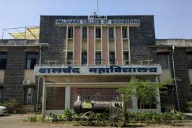

WALCHAND COLLEGE OF ENGINEERING SANGLI
ABOUT
Walchand College of Engineering is an autonomous engineering education institute in the city of Sangli, Maharashtra, India. The WCE campus is situated on nearly 90 acres of land in Vishrambag, roughly midway between the twin cities of Sangli and Miraj.
The college was established in 1947 by the Hon. (Late) Dhondumama Sathe and began with an undergraduate course in Civil Engineering with a capacity of 60 students. It was affiliated with Bombay University in 1947. After Pune University was set up in 1948, the college became affiliated with Pune University. In 1955, the college was renamed after Walchand Hirachand, an industrialist. Since the establishment of Shivaji University, at Kolhapur in 1962, Walchand College of Engineering, Sangli has been affiliated with Shivaji University. Since 2007, it has been an autonomous college offering the B.Tech. degree [2] in Maharashtra with 'financial and academic autonomy'.[3] It is known for its vast campus and placement.
Link for BONAFIED INFORMATION:
student log in
admin log in
